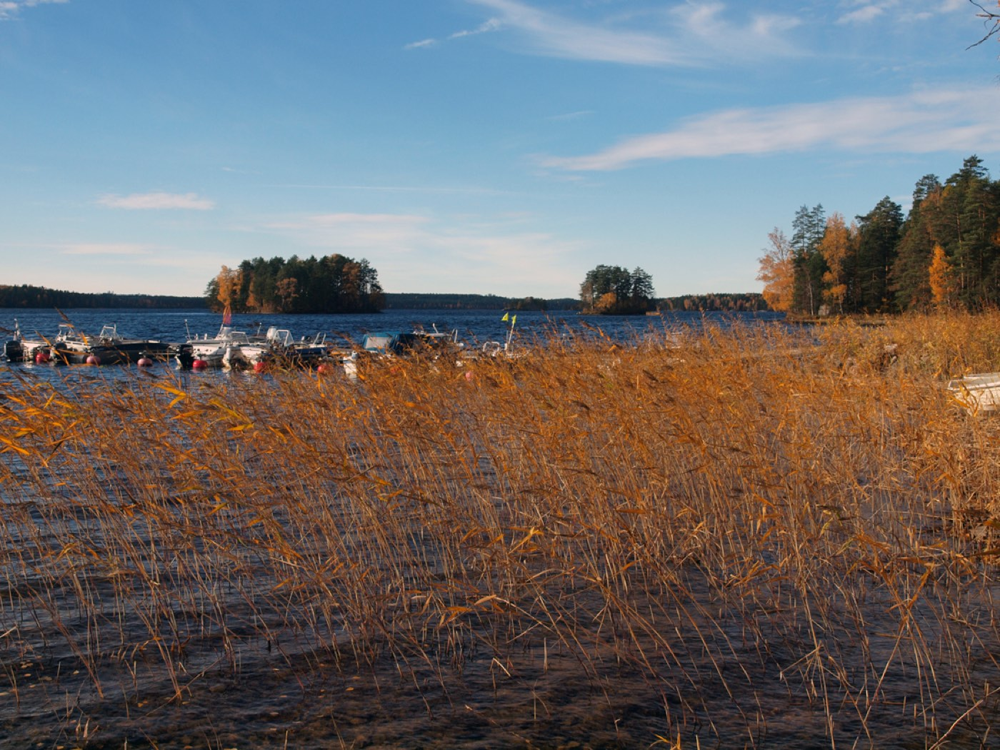

Kylä Kuolimon saaressa
Asukasyhdistys ylläpitää kylän yhteistä rantasaunaa, hoitaa vuonna 2014 talkoilla rakennettua valokuituverkkoa ja kutsuu koolle talkoot.
Ajankohtaista
Ladataan uutisia…
Kaikki uutiset vuodesta 2013 alkaen
Yhdessä tekemisen kylä
Viihtyisä asuinympäristö, sen hoitaminen, kehittäminen ja rakentaminen paikallisesti yhteisön omin toimin lisää asukkaidensa asumistyytyväisyyttä, kasvattaa yhteisöllisyyttä ja laskee kynnystä auttaa — mutta myös pyytää apua. Haluamme ottaa vastuuta naapureistamme, lapsistamme, nuoristamme ja vanhuksistamme jo nyt ja yhä enemmän tulevaisuudessa.
Paimensaaressa on lähdetty vastaamaan pienessä mittakaavassa tulevaisuuden haasteisiin. Yhteiseen työhön oman asuinympäristömme puolesta tarvitsemme kaikkien panosta omien kykyjensä mukaan. Pakko on kuitenkin meille vieras sana, eikä kenenkään tule kokea syyllisyyttä, mikäli on vain hengessä mukana.